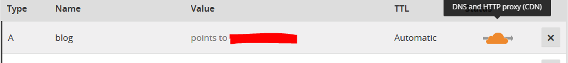
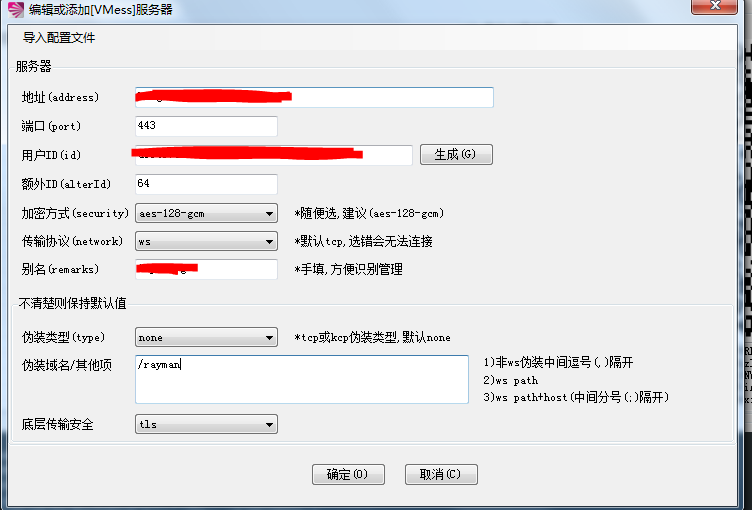

悄悄地翻墙，打枪的不要！——搭建配备WebSocket+TLS+CDN的v2ray服务
去年10月开始，国内就开始传言GFW已经掌握识别SS流量技术（详见《ss已经被特征识别了，请大家跑路》），同时许多网友在网上报告自己搭建ss的vps被GFW认证。所幸的是，当时我的vps除了不知道什么原因失联一次，可以说是免于一劫。然而，今年开年党国对vps的屏蔽愈演愈烈（详见《关于最近(01月24日后) GFW 大规模封禁 代理服务器IP 的一些猜测 》），终于在1月我vastitude才开通不久的ip173开头的vps被封，这家服务商买时说是能换机房，我在被墙当天提交了申请，申请完提示等待，一旦完成会发邮件告知，然而我却一直等到了除夕夜，我alpharack的7刀年付小鸡也惨遭毒手——一时间我居然又回到要仰仗赛风这类安全黑箱的地步！几天后在vastitude重新申请了一边并发工单、一边找网页客服聊天催促，才终于给我换好机房。我的翻墙之梯也才重新安定下来。alpharacks的机器也就挂了个H@H然后随他吃灰了
前些天在《Alpharacks - 争议很大的一家IDC》这篇博文的指引下发工单换了个ip，痛定思痛，为了降低二进宫的概率我决定要重新搭建一架钛合金梯子。现记下搭建的过程以备将来不时之需。
准备材料
- 系统ubuntu 16.04的vps
- 一个指向vps的ip的域名
安装v2ray服务端
因为v2ray这个死傲娇要求服务端和本地的时间差少于两分钟。首先要输入date -R验证时间。注意输出结果最后的-400的含义是时区，即西五区。我的小鸡时间就是西五区，与东八区刚好相差12个小时。
下载并运行服务端安装脚本
wget https://install.direct/go.sh
sudo bash go.sh
不出意外此时服务端已经安装完毕，可以输入命令
sudo systemctl start v2ray
启动之，但目前还远不能用。
配置TLS
acme.sh能够自动更新证书，但自动更新包括下文提到的重启apache或者nginx——视你使用哪个而定——都要求root权限，如果在普通账户下配置了自动更新的计划执行时可能出现权限不够的问题。因此最好切换到root账户下进行下列操作。
首先输入以下命令，acme.sh 会安装到 ~/.acme.sh 目录下。
curl https://get.acme.sh | sh
执行以下命令生成证书：
~/.acme.sh/acme.sh --issue -d 自己的域名 --standalone -k ec-256
这个命令会用到 80 端口，因此在执行之前要确保关掉了apache和ngninx之类会监听80端口的程序。为了保证将来acme。sh自动更新证书的顺利执行，我在/etc/apache2/ports.conf把apache默认监听的端口从80改到了443。
然后将证书导入到/etc/v2ray中
~/.acme.sh/acme.sh --installcert -d blog.lostanother.fun --ecc\
--keypath /etc/v2ray/v2ray.key \
--fullchainpath /etc/v2ray/v2ray.crt \
--reloadcmd "service apache2 force-reload"
使用installcert参数执行的操作会被acme.sh记录下来，在下次证书更新时再次执行，避免证书申请下来了还要人工安装证书并载入Apache。
至此ssl证书就一劳永与地申请、安装完毕了。
配置Apache转发v2ray流量
apache安装好后，开启以下模组
sudo a2enmod ssl
sudo a2enmod proxy
sudo a2enmod proxy_wstunnel
sudo a2enmod proxy_http
sudo a2enmod rewrite
sudo a2enmod headers
编辑配置文件/etc/apache2/000-default.conf
<VirtualHost *:443>
ServerName yourdomain.com.
ServerAlias yourdomain.com.
##SSL Engine Switch:
#Enable/Disable SSL for this virtual host.
SSLEngine On
RewriteEngine On
RewriteCond %{HTTP:Upgrade} =websocket [NC]
RewriteRule /(.*) ws://localhost:3579/$1 [P,L]
RewriteCond %{HTTP:Upgrade} !=websocket [NC]
RewriteRule /(.*) http://localhost:3579/$1 [P,L]
##Proxy to port 3579
#Replace xxx.xxx.xxx.xxx with your servers IP adress or hostname
#Replace yourCertname with your servers SSL certificate name
SSLProxyEngine On
Proxypass /ray http://127.0.0.1:3579
ProxyPassReverse /ray http://127.0.0.1:3579
SSLCertificateFile /etc/v2ray/v2ray.crt
SSLCertificateKeyFile /etc/v2ray/v2ray.key
</VirtualHost>
以上配置来自这篇博文，我在使用后发现无法再使用443端口访问放在vps上的博客了。研究了一番apache的转发规则后发现这个配置中的转发规则是吧websocket和http流量都转发给了3579，也就是我们即将配置的v2ray监听的端口。既然我们选择用websocket流量连接v2ray，也就没必要转发http流量了，因此可以删掉
RewriteCond %{HTTP:Upgrade} !=websocket [NC]
RewriteRule /(.*) http://localhost:3579/$1 [P,L]
只转发代理流量，让正常的http流量正常进出，保证博客的正常浏览。
v2ray服务端配置
打开/etc/v2ray/config.json，如下进行配置
{
"log" : {
"access": "/var/log/v2ray/access.log",
"error": "/var/log/v2ray/error.log",
"loglevel": "warning"
},
"inbound": {
"port": 3579, //应于Apache转发流量的目标端口一致
"listen":"127.0.0.1", //只监听本地端口，避免被外部主动嗅探
"protocol": "vmess",
"settings": {
"clients": [
{
"id": "你的UUID", //UUID是类似密码一般的存在，不要随意编写，可在第三方客户端如v2rayN或在线（如UUIDgenerator.net）生成
"level": 1,
"alterId": 64
}
]
},
"streamSettings":{
"network":"ws",
"wsSettings":{
"path":"/ray" //与Apache配置中路径一致，可以且鼓励自定义该路径
}
}
},
"outbound": {
"protocol": "freedom",
"settings": {}
},
"outboundDetour": [
{
"protocol": "blackhole",
"settings": {},
"tag": "blocked"
}
]
}
CDN配置
这个就没什么好说的了，注册个cloudflare账号，将其作为DNS服务器，然后给想要保护的域名打开cdn开关就行。

客户端配置(windows)
这里下载v2ray客户端（其实和服务端是同一套程序），这里下载第三方程序v2rayN。解压到同一个文件夹内，打开v2rayN，点击服务器-添加[vmess]服务器
在弹出的配置窗口内如图填写

地址处填写你的域名
用户ID处填写你的UUID
别名处你自己给这个v2ray服务起个名字
伪装域名处填写上文Apache和v2ray中填写的路径。注意/ray和/ray/是不一样的`
不出意外的话，客户端至此就已经配置完成。点击确定，设置好浏览器代理就可以翻墙上网了